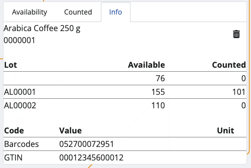
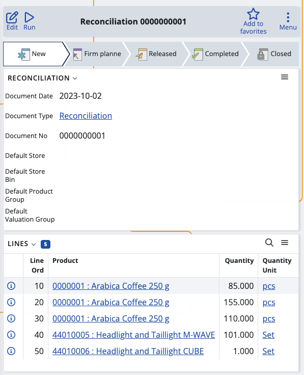

Reconcile
This section allows you to update the available quantities of your warehouse or shop's products, and generate reconciliation documents.
By occasionally counting everything, it may turn out that some products have fewer or higher quantities, or are no longer present.
The reverse could also be true: new products may be identified but not entered into the system.
Inventory Control allows you to reflect any of these changes within its Reconcile section.

Overview
Reconcile is composed of three tabs:
- Availability
- Counted
- Info
Availability
This is where all of your products are listed, together with their current quantities and lots, if present.

Counted
Here, you can find how many quantities of the products have been counted as opposed to being available in total.
For example, out of 150pcs, only 131 may be present. This will be reflected in the reconciliation document.

Info
If you tap on a product from the Availability tab, you'll be shown further information about it here.
This includes revealing its unique ID, barcode and GTIN, if present, as well as how many instances of it have been counted.
If more lots are present, the available-counted ratio will be distributed based on the FEFO principle.

Scanning
In order to update the currently available quantities of your products, you need to use the Scan field.
It lets you quickly insert the instances of a product you want to count either manually or through barcode commands.
Individual count
Simply type in a product's ID once (e.g. "0000001") in order to count only one pcs of it. Tap the blue arrow to confirm.
Every time you scan, you'll be taken to the Info tab for the respective product. Successfully counted pcs are painted in green.
If more lots are present for a product, the FEFO principle determines which lot has pcs counted first.
Multiple counts
To count more pcs or the exact number of pcs for a product, specify it first (e.g. "50"), add a "*", and then provide the product ID.
This can be done on one line, or on two separate lines for each input. Tap the blue arrow to confirm.

NOTE!
The trash bin button allows you to remove the latest count, which will restore the previous Counted value.
Any one, two or three-number combination is automatically counted as a multiplier. You can insert it without adding "*" in the end.
Higher count
The currently available pcs of a product may be more than what is set as available in the system.
You can update the number by providing the higher counted value, which will be reflected in the final reconciliation document.

Zero count
In case you've made a mistake and want to start counting from scratch, type in "0*" followed by the affected product ID.
If the counted bar is left with zero, this will be interpreted as the product having "0 pcs" (unavailable) in the final reconciliation document.

Generate a reconciliation document
Once you're done counting the product quantities, you can go back to the Counted tab to see if you've made any mistakes.
The Available value will be positioned above the Counted one, making it easy to compare past and present values.
Tap the blue Finish button to generate your reconciliation document.
This will take you to a separate space with direct access to the document template for this operation.

By tapping on it, you'll access the Inventory module from where you can release and complete the document.
